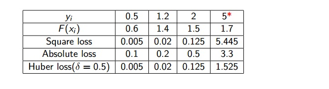

Chương 13 Bagging - Boosting và Random Forest
13.1 Bagging
Mô hình cây quyết định như đã đề cập, sẽ gặp phải vấn đề high variance. Nghĩa là nếu chúng ta chia ngẫu nhiên tập dữ liệu training làm 2 tập dữ liệu con, và sau đó xây dựng mô hình trên 2 tập dữ liệu con đó, kết quả nhận được sẽ có thể khá khác nhau. Boostrap aggregation hay bagging sẽ có thể làm giảm variance, đây là một phương pháp rất hiệu quả và phổ biến khi chúng ta sử dụng các phương pháp liên quan đến cây quyết định.
Giả sử, có tập hợp n quan sát độc lập Z1,…, Zn, mỗi quan sát với variance σ^2, variance của giá trị trung bình các quan sát Z là σ^2/n. Nói cách khác, trung bình tập hợp các quan sát sẽ làm giảm variance. Vì thế cách tự nhiên nhất để làm giảm variance và tăng độ chính xác của dự báo là lấy thật nhiều các dữ liệu training khác nhau, rồi xây dựng các mô hình dự báo sử dụng các tập dữ liệu training đó, sau đó lấy trung bình các kết quả dự báo. Nói cách khác, chúng ta sẽ tính toán fˆ1(x), fˆ2(x), . . . , fˆB(x) sử dụng B tập dữ liệu training khác nhau, sau đó lấy trung bình để nhận được một mô hình đơn với variance thấp như sau:
\[\widehat{f}_{avg}(x) = \frac{1}{B}\sum_{b=1}^{B}\widehat{f}^{b}(x)\]
Tuy nhiên, điều đó là không thực tế vì chúng ta không thể có nhiều dữ liệu training khác nhau, dữ liệu là hữu hạn. Vì vậy, chúng ta sẽ sử dụng boostrap, tức phương pháp lấy mẫu ngẫu nhiên có hoàn lại từ tập dữ liệu training duy nhất của chúng ta. Theo đó, chúng ta sẽ tạo ra B boostrapped dữ liệu training khác nhau để có được các giá trị dự báo khác nhau, và sau đó sẽ lấy trung bình tất cả các kết quả dự báo, thu được kết quả cuối cùng:
\[\widehat{f}_{bag}(x) = \frac{1}{B}\sum_{b=1}^{B}\widehat{f^{*}}^{b}(x)\]
Đây gọi là bagging. Bagging có thể cải thiện chất lượng dự báo cho rất nhiều các mô hình hồi quy, đặc biệt hiệu quả đối với mô hình cây quyết định. Để áp dụng bagging với regression trees, chúng ta đơn giản chỉ cần xây dựng B regression trees sử dụng B boostrapped dữ liệu training, sau đó lấy trung bình các kết quả dự báo. Những cây quyết định này được xây dựng rất sâu (nhiều tầng) và không được “tỉa”. Vì thế mỗi cây quyết định trên sẽ có variance cao, nhưng bias thấp. Lấy trung bình kết quả B cây quyết định này sẽ làm giảm variance. Bagging có thể cải thiện chất lượng dự báo một cách đáng kể khi kết hợp hàng trăm hoặc thậm chí hàng nghìn cây quyết định lại với nhau.
Cho đến thời điểm hiện tại, chúng ta đã mô tả phương pháp bagging đối với regression trees, tức dự báo biến đầu ra là biến liên tục. Vậy phương pháp bagging có thể sử dụng với bài toán mà biến đầu ra là biến rời rạc không? Trong trường hợp này, giả sử khi chúng ta muốn phân loại một quan sát mới, chúng ta có thể dự báo được quan sát mới trên thuộc class nào trong B cây quyết định khác nhau, rồi sau đó, lấy majority vote - tức là, quan sát mới trên sẽ rơi vào class mà tần suất xuất hiện của nó nhiều nhất trong B kết quả dự báo khác nhau.
Trong phương pháp bagging, tham số về số lượng cây quyết định B nói trên mà càng lớn thì cũng không thể dẫn đến overfitting. Trong thực tế, chúng ta sẽ chọn số lượng cây quyết định đủ lớn để sao cho sai số đủ nhỏ.
Out-of-Bag Error Estimation
Có một cách khá đơn giản để ước lượng sai số dự báo (test error) của mô hình bagging mà không cần dùng cross-validation hoặc tập dữ liệu validation. Nhắc lại key của phương pháp bagging là việc các cây quyết định sẽ được xây dựng nhiều lần sử dụng những tập dữ liệu bootstrapped khác nhau. Mỗi một cây quyết định được xây đều sử dụng khoảng 2/3 số quan sát, còn 1/3 quan sát còn lại không được sử dụng trong quá trình xây dựng mô hình sẽ được gọi là những quan sát out-of-bag (OOB).
Chúng ta có thể dự báo kết quả cho quan sát thứ i sử dụng từng cây quyết định mà các quan sát là OOB. Điều này sẽ mang lại khoảng B/3 giá trị dự báo cho quan sát thứ i này. Để dự báo giá trị cuối cùng của quan sát đó, chúng ta sẽ lấy trung bình các kết quả dự báo (đối với bài toán hồi quy - regression) hoặc lấy theo số đông - majority vote (đối với bài toán phân loại - classification). Đó chính là kết quả dự báo OOB (OOB prediction) cho quan sát i. OOB prediction có thể sử dụng cho từng n quan sát, và có thể tính toán được OOB MSE (đối với bài toán hồi quy) hoặc classification error (đối với bài toán phân loại). Cách sử dụng OOB để ước lượng sai số dự báo (test error) sẽ thuận tiện hơn so với cách cross-validation khi sử dụng bagging đối với tập dữ liệu lớn.
Variable Importance Measures
Như vừa tìm hiểu, bagging sẽ cải thiện được độ chính xác của dự báo so với mô hình cây quyết định đơn lẻ. Tuy nhiên, bagging lại rất khó để giải thích kết quả mô hình do việc tổng hợp rất nhiều cây quyết định khác nhau.
Mặc dù đối với bagging rất khó để giải thích kết quả mô hình, nhưng chúng ta vẫn có thể xem được thống kê tổng quát về mức độ quan trọng của các biến đầu vào trong mô hình bằng việc sử dụng RSS (đối với bagging regression trees) hoặc chỉ số Gini (đối với bagging classification trees).
13.2 Random Forests
Cũng giống như bagging, random forests cũng xây dựng một tập hợp các cây quyết định sử dụng các tập dữ liệu con được chia theo phương pháp boostrap (lấy mẫu ngẫu nhiên có hoàn lại) từ tập dữ liệu training ban đầu. Tuy nhiên, với phương pháp random forests thì những tập dữ liệu con đó sẽ không bao gồm tất cả các biến đầu vào (p - tổng số lượng biến đầu vào) trong tập dữ liệu training ban đầu như bagging mà chỉ bao gồm m biến nhất định (thông thường m ~ sqrt(p)).
Đối với bagging các cây quyết định có thể tương quan chặt chẽ với nhau (highly correlated) do các cây đều lấy cùng một số lượng là tất cả các biến đầu vào trong tập dữ liệu training ban đầu. Điều đó sẽ dẫn đến việc variance sẽ cao. Trong khi đó, random forests có thể khắc phục được vấn đề trên khi mỗi cây quyết định được xây dựng chỉ lấy ngẫu nhiên m biến đầu vào ngẫu nhiên. Quá trình đó được gọi là decorrelating. Quá trình này sẽ giúp kết quả dự báo đáng tin cậy hơn.
Như vậy, điểm khác biệt quan trọng nhất giữa bagging và random forests là việc chọn số lượng biến đầu vào:
bagginglấy tất cả các biến đầu vào (p)random forestslấy m biến nhất định (m ~ sqrt(p))
Vì thế, nếu xây dựng mô hình random forests với số lượng biến đầu vào m = p (tức lấy tất cả các biến đầu vào) thì mô hình trở thành bagging. Do đó, có thể nói bagging là một trường hợp đặc biệt của random forests.
Thuật toán của Random Forest sẽ bao gồm việc lấy mẫu và chọn biến để xây dựng một số lượng lớn các cây quyết định khác nhau. Kết quả dự báo cuối cùng của một quan sát sẽ lấy trung bình các kết quả dự báo của các cây quyết định (đối với bài toán hồi quy - regression) hoặc lấy majority vote từ các kết quả dự báo từ các cây quyết định để xác định quan sát đó thuộc class nào (đối với bài toán phân loại - classification).
Giả định rằng N là số lượng quan sát của tập dữ liệu training và p là số lượng biến đầu vào. Thuật toán sẽ diễn ra theo các bước như sau:
Bước 1: Xây dựng số lượng lớn các cây quyết định bằng việc lấy mẫu ngẫu nhiên có hoàn lại N quan sát từ tập dữ liệu training
Bước 2: Với mỗi cây quyết định lựa chọn m < p biến nhất định. Những biến này được cân nhắc lựa chọn để phân nhánh, với mỗi cây quyết định thì đều có số lượng biến là m.
Bước 3: Xây dựng các cây (không thực hiện tỉa cây)
Bước 4: Dự báo các quan sát mới bằng việc lấy trung bình các kết quả dự báo của các cây quyết định khác nhau đã được xây dựng (đối với bài toán hồi quy), hoặc lấy theo kết quả số đông của các cây quyết định khác nhau đã được xây dựng (đối với bài toán phân loại).
Out-of-bag (OOB) error estimate được tính toán bằng việc phân loại quan sát mới mà không có trong tập dữ liệu training khi xây dựng cây quyết định. Việc này sẽ hữu ích khi mà chúng ta không có dữ liệu validation.
Trong R để xây dựng mô hình random forests chúng ta có thể sử dụng hàm randomForest() trong package randomForest. Số lượng cây mặc định là 500, số lượng biến tại mỗi cây mặc định là sqrt(tổng số biến), và kích thước nhỏ nhất của cây mặc định là 1.
# Data
loc <- "http://archive.ics.uci.edu/ml/machine-learning-databases/"
ds <- "breast-cancer-wisconsin/breast-cancer-wisconsin.data"
url <- paste(loc, ds, sep="")
breast <- read.table(url, sep=",", header=FALSE, na.strings="?")
names(breast) <- c("ID", "clumpThickness", "sizeUniformity",
"shapeUniformity", "maginalAdhesion",
"singleEpithelialCellSize", "bareNuclei",
"blandChromatin", "normalNucleoli", "mitosis", "class")
df <- breast[-1]
df$class <- factor(df$class, levels=c(2,4),
labels=c("benign", "malignant"))
set.seed(1234)
train <- sample(nrow(df), 0.7*nrow(df))
df.train <- df[train,]
df.validate <- df[-train,]library(ISLR)
library(tidyverse)## Loading tidyverse: ggplot2
## Loading tidyverse: tibble
## Loading tidyverse: tidyr
## Loading tidyverse: readr
## Loading tidyverse: purrr
## Loading tidyverse: dplyr## Warning: package 'ggplot2' was built under R version 3.4.4## Warning: package 'tibble' was built under R version 3.4.4## Warning: package 'tidyr' was built under R version 3.4.4## Warning: package 'readr' was built under R version 3.4.4## Warning: package 'purrr' was built under R version 3.4.4## Warning: package 'dplyr' was built under R version 3.4.4## Conflicts with tidy packages ----------------------------------------------## filter(): dplyr, stats
## lag(): dplyr, statslibrary(randomForest) # Package sử dụng cho Random Forests## randomForest 4.6-12## Type rfNews() to see new features/changes/bug fixes.##
## Attaching package: 'randomForest'## The following object is masked from 'package:dplyr':
##
## combine## The following object is masked from 'package:ggplot2':
##
## marginset.seed(1234)
# Xây dựng mô hình trên tập training
fit_rf <- randomForest(class ~ .,
data = df.train,
na.action = na.roughfix, # Xử lý giá trị missing
importance = T
)
fit_rf##
## Call:
## randomForest(formula = class ~ ., data = df.train, importance = T, na.action = na.roughfix)
## Type of random forest: classification
## Number of trees: 500
## No. of variables tried at each split: 3
##
## OOB estimate of error rate: 3.68%
## Confusion matrix:
## benign malignant class.error
## benign 319 10 0.03039514
## malignant 8 152 0.05000000Để xem mức độ quan trọng của các biến trong mô hình chúng ta có thể sử dụng hàm importance().
# Xem mức độ quan trọng của các biến trong mô hình
importance(fit_rf,
type = 2
)## MeanDecreaseGini
## clumpThickness 12.504484
## sizeUniformity 54.770143
## shapeUniformity 48.662325
## maginalAdhesion 5.969580
## singleEpithelialCellSize 14.297239
## bareNuclei 34.017599
## blandChromatin 16.243253
## normalNucleoli 26.337646
## mitosis 1.814502MeanDecreaseGini - tổng độ giảm tính không đồng nhất (heterogeneity), hay nói cách khác là tăng tính đồng nhất từ việc chọn biến đó để phân nhánh, tính trung bình trên tất cả các cây.
MeanDecreaseGini của biến nào càng cao, thì biến đó càng quan trọng trong mô hình.
Kết quả trên cho chúng ta thấy rằng biến sizeUniformity là quan trọng nhất, trong khi đó mitosis là biến ít quan trọng nhất.
Sau khi xây dựng được mô hình, để phân loại những quan sát mới từ tập dữ liệu kiểm tra (validation sample), chúng ta sử dụng hàm predict()
# Dự báo những quan sát mới
rf_pred <- predict(fit_rf,
df.validate
)
# Đánh giá chất lượng mô hình trên tập validation
rf_perf <- table(df.validate$class,
rf_pred,
dnn = c("Actual", "Predicted")
)
rf_perf## Predicted
## Actual benign malignant
## benign 117 3
## malignant 1 79Kết quả dự báo cho ta thấy rằng đối với những quan sát bị missing, mô hình sẽ không phân loại. Tỷ lệ quan sát được dự báo đúng là: (117+79)/200 = 98% (tập dữ liệu kiểm tra có 210 quan sát, nhưng có 10 quan sát bị missing nên mô hình chỉ phân loại 200 quan sát).
Ưu điểm của Random Forests là chất lượng dự báo tốt, độ chính xác cao hơn so với những phương pháp như Logistic hay Decision Trees. Hơn nữa, phương pháp này có thể xử lý tốt với những trường hợp dữ liệu lớn (nhiều quan sát, nhiều biến) hoặc dữ liệu bị missing. Ngoài ra, việc tính toán được OOB error và xem xét được mức độ quan trọng của các biến đến kết quả dự báo (variable importance) cũng là một ưu điểm. Tuy nhiên, nhược điểm của Random Forests là rất khó giải thích, vì trong quá trình xây dựng mô hình theo phương pháp này, chúng ta sẽ xây dựng rất nhiều các cây quyết định đơn lẻ khác nhau. Điều đó thể hiện sự đánh đổi giữa chất lượng dự báo và tính giải thích của mô hình.
13.3 Boosting
Bây giờ chúng ta sẽ cùng thảo luận về boosting, một phương pháp khác để cải thiện chất lượng dự báo từ việc sử dụng cây quyết định. Giống như các phương pháp trước, boosting có thể áp dụng được đối với cả 2 bài toán: Hồi quy (regression) và phân loại (classification).
Nhắc lại một chút, boosting và random forests sử dụng phương pháp boostrap (lấy mẫu ngẫu nhiên có hoàn lại) để tạo các tập dữ liệu con từ dữ liệu training ban đầu, sau đó xây dựng các cây quyết định đối với từng tập dữ liệu con đó (các cây quyết định được xây dựng độc lập với nhau). Cuối cùng, sẽ tổng hợp lại các cây quyết định để ra được kết quả dự báo cuối cùng bằng cách lấy trung bình các kết quả dự báo của các cây quyết định (đối với bài toán hồi quy), hoặc lấy theo số đông các kết quả dự báo của các cây quyết định (đối với bài toán phân loại).
Boosting cũng hoạt động theo cách tương tự, nhưng khác ở chỗ là việc xây dựng các cây quyết định từ những tập dữ liệu con khác nhau không phải là độc lập hoàn toàn với nhau như bagging hay random forests. Thay vào đó, boosting xây dựng các cây quyết định một cách có trình tự (sequentially): Mỗi cây kế tiếp được xây dựng bằng cách sử dụng kết quả từ những cây trước đó. Boosting tập trung nhiều hơn vào những quan sát bị dự báo sai từ những cây trước để góp phần cải thiện kết quả dự báo cuối cùng. Boosting không dùng boostrap để chia tập dữ liệu training ban đầu, mà thay vào đó là việc dùng các phiên bản đã được modified từ tập dữ liệu train ban đầu để xây dựng các cây quyết định.
Chúng ta sẽ cùng xem xét bài toán hồi quy. Giống như bagging và randomforests, boosting kết hợp nhiều cây quyết định lại với nhau: f1,…, fB.
Thuật toán boosting đối với bài toán hồi quy:
Bước 1: Đặt fˆ(x) = 0 và ri = yi với mọi i trên tập dữ liệu training
Bước 2: Với b = 1,2.., B, lặp lại:
- Xây dựng một cây fˆb với d splits (d+1 terminal nodes) với dữ liệu training (X,r).
- Update fˆ bằng việc adding in a shrunken version of the new tree, và update residuals:
\[\widehat{f}(x) = \widehat{f}(x) + λ\widehat{f}^{b}(x)\]
\[r_i = r_i - λ\widehat{f}^{b}(x_i)\]
- Bước 3: Kết quả của boosted model:
\[\widehat{f}(x) = \sum_{b=1}^{P}λ\widehat{f}^{b}(x)\]
Thay vì việc xây dựng các cây quyết định đơn lẻ với kích thước lớn có thể dẫn đến vấn đề overfitting, phương pháp boosting sẽ “học” chậm (learn slowly). Khi xây dựng xong cây quyết định đầu tiên, chúng ta sẽ xây dựng cây quyết định tiếp theo sử dụng biến đầu ra là phần dư (residuals) của cây trước đó.
Sau đó, sẽ xây dựng các cây quyết định tiếp theo để update residuals. Mỗi cây có thể có kích thước nhỏ, với chỉ một vài terminal nodes được quyết định bởi tham số d trong thuật toán. Bằng việc xây dựng những cây nhỏ với residuals, chúng ta có thể dần dần cải thiện fˆ. Tham số shrinkage hay learning rate(tốc độ học của mô hình) λ sẽ làm mô hình “học” chậm và kỹ hơn nữa giúp cải thiện chất lượng mô hình.
Lưu ý rằng khác với bagging, đối với boosting thì việc xây dựng các cây quyết định tiếp theo sẽ phụ thuộc vào kết quả của các cây trước đó.
Như vậy, chúng ta đã vừa cùng tìm hiểu về boosting regression trees. Bây giờ chúng sẽ cùng tìm hiểu về 2 thuật toán trong boosting là Adaboost và Gradient Boosting.
AdaBoost
AdaBoost kết hợp các “weak learners” để tạo thành “strong learner” (“weak learners” được hiểu là các cây phân loại chỉ tốt hơn một chút so với việc đoán ngẫu nhiên). Sau mỗi bước lặp, những quan sát bị phân loại sai sẽ được đánh trọng số cao hơn, những quan sát được phân loại đúng sẽ đánh trọng số thấp hơn. Mỗi cây tiếp theo được xây dựng với mục tiêu phân loại đúng những quan sát đã bị phân loại sai ở cây trước đó.
Chúng ta sẽ mô tả thuật toán Adaboost thông qua việc sử dụng ví dụ sau đây: Phân loại các quan sát vào 2 nhóm + hoặc -. Chúng ta sẽ thực hiện các bước sau:
Diễn giải:
Box 1: Đánh trọng số bằng nhau đối với tất cả quan sát và xây dựng một decision stump - D1 (cây chỉ gồm 1 split hay 1 tầng) để phân loại các quan sát thành 2 nhóm
+và-. Kết quả cho thấy có 3 quan sát bị phân loại sai (là+nhưng lại bị cho vào nhóm-), 3 quan sát này sẽ được đánh trọng số cao hơn và tiếp tục xây dựng decision stump khác - D2.Box 2: D2 được xây dựng với mục đích phân loại đúng 3 quan sát bị phân loại sai ở D1. Kết quả cho thấy, lại có 3 quan sát bị phân loại sai (là
-nhưng bị cho vào nhóm+). Lại tiếp tục đánh trọng số cao hơn đối với những quan sát này và tiếp tục xây dựng decision stump - D3.Box 3: D3 được xây dựng với mục đích phân loại đúng 3 quan sát bị phân loại sai ở D2. Kết quả cho thấy vẫn có những quan sát bị phân loại sai.
Box 4: Kết hợp D1, D2, D3 để tạo thành D4 - phân loại tốt hơn so với D1, D2, D3 (nhóm
+và-đã được phân loại hoàn toàn).
Gradient Boosting
Gradient Boosting = Gradient Descent + Boosting
Cả AdaBoost và Gradient Boosting đều kết hợp các “weak learners” để tạo thành một “strong learner” và đều tập trung vào những quan sát bị dự báo sai. AdaBoost thì đánh trong số cao hơn vào những quan sát bị dự báo sai tại mỗi cây trước, và cố gắng dự báo đúng những quan sát đó tại cây tiếp theo. Trong khi đó, với Gradient Boosting, mỗi một cây mới sẽ được xây dựng với mục tiêu tối thiểu hóa dần tổng loss của cây trước đó bằng việc sử dụng phương pháp gradient descent.
Trong Gradient Boosting, việc tính tổng loss dựa vào việc lựa chọn loại “loss function” nào, ví dụ như: square loss, absolute loss, huber loss. Mỗi loại đều có những ưu/nhược điểm riêng.
- Square loss:
\[L(y,F) = (y-F)^2/2\]
- Absolute loss:
\[L(y,F) = |y-F|\]
- Huber loss:
\[\begin{cases}(y-F)^2/2 & |x-F| \leqslant \delta\\\delta(|y-F| - \delta/2) & |x-F| > \delta\end{cases}\]
Ví dụ:

Boosting có 3 tham số cơ bản để tối ưu hóa mô hình (tuning parameters):
Số lượng cây quyết định (B): Với boosting khi số lượng cây quá nhiều có thể dẫn đến overfitting, nên chúng ta sẽ sử dụng cross-validation để lựa chọn số lượng cây
Tốc độ học λ (
learning ratehoặcshrinkage): Giá trị nhỏ, dương. λ có thể nhận các giá trị như: 0.1, 0.01, hay 0.001 tùy từng trường hợp. λ càng nhỏ thì mô hình sẽ “học” càng chậm, càng lâu.Số lần splits, hay phân nhánh (d) của mỗi cây: Tham số này dùng để kiểm soát độ phức tạp của mô hình. Tham số này còn có thể gọi là số tầng cây (
interactive depth). Nếu d = 1 (tức cây chỉ có 1 tầng hay 1 split) thì cây quyết định đó được gọi làstump.
Để thực hành xây dựng mô hình boosting trên R, chúng ta sẽ sử dụng dữ liệu có sẵn trong R - GermanCredit.
Đây là dữ liệu ghi nhận về lịch sử vay của khách hàng, với các 61 biến đầu vào cùng với biến đầu ra Class ghi nhận thực tế là các khoản vay đó có phải là khoản nợ xấu hay không.
Để xây dựng mô hình boosting trên R, chúng ta sẽ sử dụng hàm gbm() trong package gbm.
rm(list = ls())
library(caret)## Loading required package: lattice##
## Attaching package: 'caret'## The following object is masked from 'package:purrr':
##
## liftdata("GermanCredit")
data <- GermanCredit
rm(GermanCredit)
# Hàm tính toán các chỉ số đo lường chất lượng dự báo của mô hình
model.performance <- function(confusion_matrix) {
a <- confusion_matrix[1,1]
b <- confusion_matrix[1,2]
c <- confusion_matrix[2,2]
d <- confusion_matrix[2,1]
tpr <- c/(b+c)
precision <- c/(c+d)
accuracy <- (a+c)/(a+b+c+d)
print(paste('recall :',round(tpr,2)))
print(paste('precision :', round(precision,2)))
print(paste('accuracy :',round(accuracy,2)))
}
# Chia data: training/testing tỷ lệ 8/2
set.seed(123)
indxTrain <- createDataPartition(y = data$Class,p = 8/10,list = FALSE)
training <- data[indxTrain,]
testing <- data[-indxTrain,]
df.train <- training
df.train$Status[df.train$Class == "Good"] <- 1
df.train$Status[df.train$Class == "Bad"] <- 0
df.test <- testing
df.test$Status[df.test$Class == "Good"] <- 1
df.test$Status[df.test$Class == "Bad"] <- 0
rm(training,testing)
# Gradient Boosting
set.seed(9999)
# Xây dựng mô hình trên tập train
library(gbm)## Loading required package: survival##
## Attaching package: 'survival'## The following object is masked from 'package:caret':
##
## cluster## Loading required package: splines## Loading required package: parallel## Loaded gbm 2.1.1gbm.train <- gbm(Status ~ . - Class,
data = df.train,
distribution = "bernoulli",
n.trees = 1000,
shrinkage = 0.01,
interaction.depth = 4)## Warning in gbm.fit(x, y, offset = offset, distribution = distribution, w =
## w, : variable 26: Purpose.Vacation has no variation.## Warning in gbm.fit(x, y, offset = offset, distribution = distribution, w =
## w, : variable 44: Personal.Female.Single has no variation.# Dự báo quan sát trên tập test
gbm.result <- predict(gbm.train,
newdata = df.test,
n.trees = 1000,
type = "response")
# Confusion matrix
gbm.conf <- rep ("Bad", 200)
gbm.conf[gbm.result > 0.5] = "Good"
gbm.confusion <- table(gbm.conf, df.test$Class)
gbm.confusion ##
## gbm.conf Bad Good
## Bad 35 16
## Good 25 124model.performance(gbm.confusion)## [1] "recall : 0.89"
## [1] "precision : 0.83"
## [1] "accuracy : 0.8"35+124+25+16## [1] 200Kết quả
confusion matrixtrên tập dữ liệu testing cho chúng ta thấy:Tỷ lệ dự báo đúng trên tổng quan sát là 80% (tức 35 khách hàng có nợ xấu và 124 khách hàng không có nợ xấu được dự báo đúng trên tổng số 200 khách hàng trên tập dữ liệu testing)
Trong số 140 khách hàng thực tế không có nợ xấu thì chúng ta dự báo chính xác 124 khách hàng (tỷ lệ 124/140 = 89%)
Trong số 149 khách hàng mà chúng ta dự báo là không có nợ xấu, có 124 khách hàng được dự báo chính xác (tỷ lệ 124/149 = 83%)
# ROC
library(ROCR) # Dùng để vẽ đường ROC và tính toán AUC## Loading required package: gplots##
## Attaching package: 'gplots'## The following object is masked from 'package:stats':
##
## lowessgbm.ROC <- prediction(gbm.result, df.test$Class)
gbm.ROCperf_test <- performance(gbm.ROC, "tpr", "fpr")
# Vẽ ROC
plot(gbm.ROCperf_test)
# Tính toán AUC
gbm.auc_test <- performance(gbm.ROC, "auc", "cutoff")
gbm.auc_test@y.values## [[1]]
## [1] 0.8171429- Kết quả
AUC ~ 82%trên tập testing cho thấy chất lượng dự báo của mô hình là tương đối tốt.